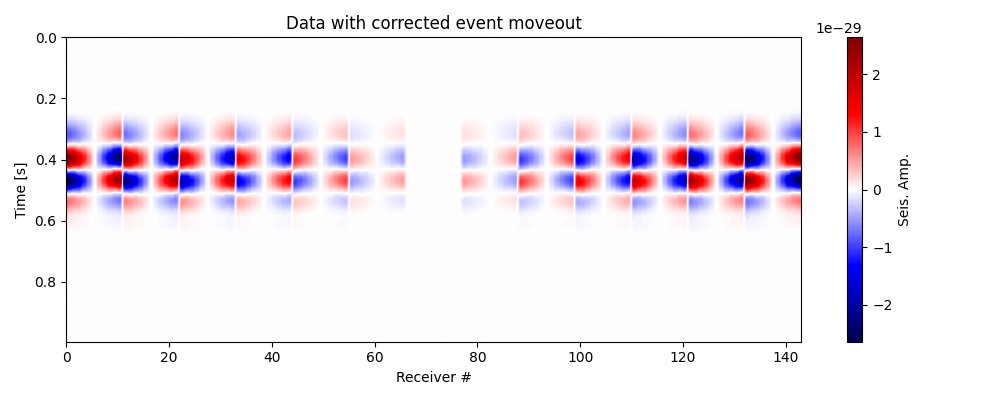
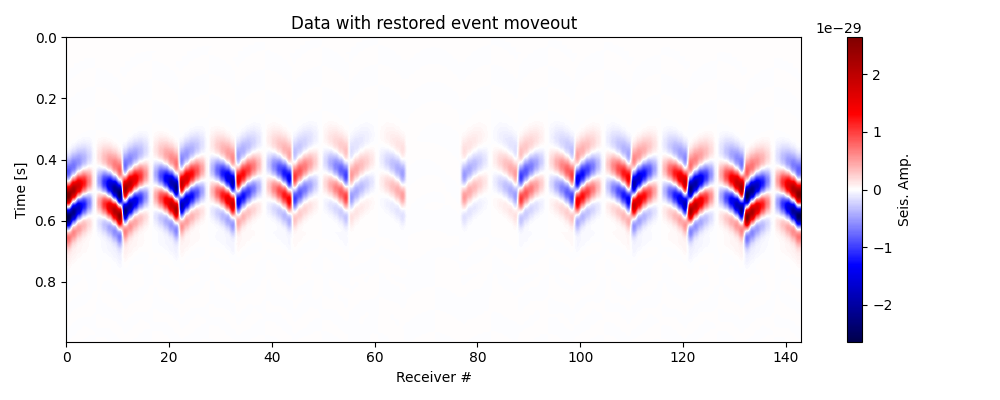
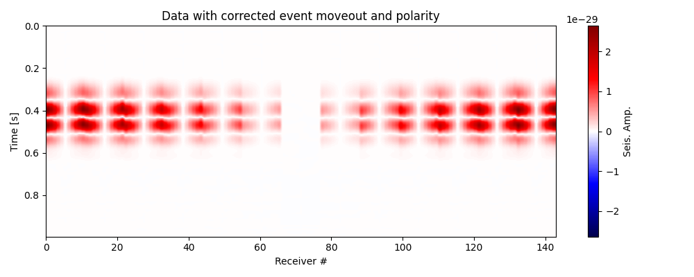
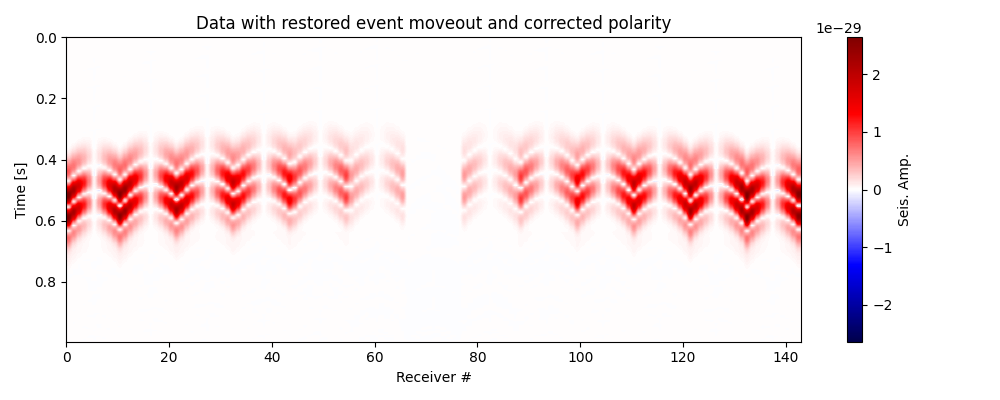
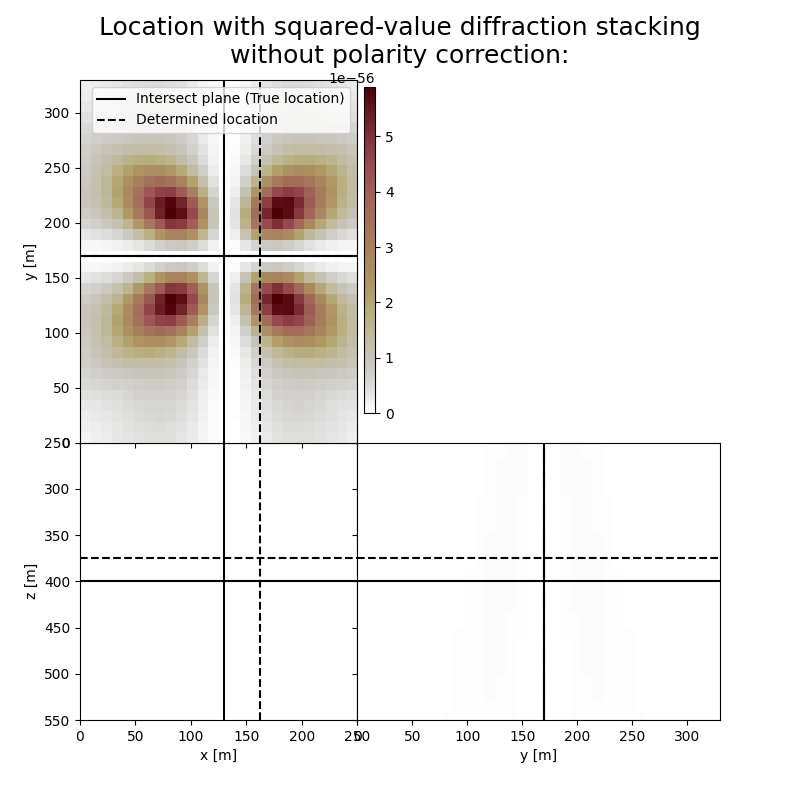
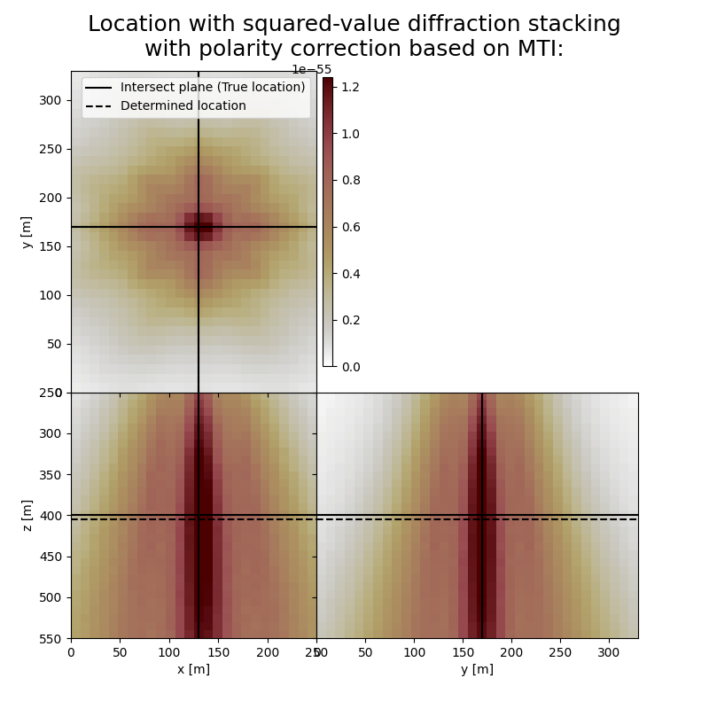
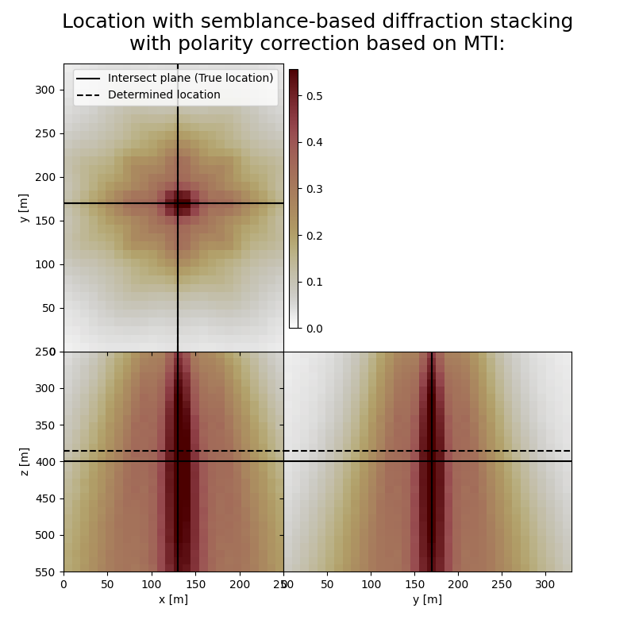

Note
Go to the end to download the full example code.
2.2 Diffraction Stacking: Localisation With Polarity Correction#
This tutorial illustrates how to perform source localisation using diffraction stacking with polarity correction by moment tensor inversion.
We consider here a homogeneous subsurface model and a point Double-Couple (DC) microseismic source. We also consider only P-waves for simplicity here.
Traveltimes#
In a homogeneous medium traveltimes are computed analytically as
where \(d(\mathbf{x_r},\mathbf{x_s})\) is the distance between a source at \(\mathbf{x_s}\) and a receiver at \(\mathbf{x_r}\), and \(v\) is medium wave velocity (e.g. P-wave velocity \(v_p\)).
Waveforms#
The input data waveforms were precomputed with the help of the finite-difference (FD) modelling using SOFI3D (Bohlen, 2002).
See more: https://docs.csc.fi/apps/sofi3d/
Diffraction stacking with moment tensor inversion#
Basics of the simple diffraction stacking are explained in 2.1 Diffraction Stacking: Localisation.
Microseismic events usually have non-explosive radiation pattern, which means that the polarities of the P- or S-wave amplitudes can be both positive and negative. For example, in case of a simple diffraction stacking of waveforms recorded from a pure double-couple strike-slip source with receivers symmetrically distributed around the event’s epicenter, the stack value at the true source position will be equal to zero (Zhebel, 2014; Anikiev, 2015). To resolve this problem, one can account for polarities of a signal while applying the stacking procedure.
The polarities of a potential microseismic event can be estimated by computing the seismic moment tensor (SMT) at every image point and every potential origin time using the least squares inversion of the amplitudes corresponding to the traveltime moveout. Sipkin (1982) showed that the moment tensor can be efficiently computed by
where \(\mathbf{M}(\mathbf{r})\) is the vectorized moment tensor, \(\mathbf{G}_R^{\phantom{T}}(\mathbf{r})\) is the vectorized derivative of Green’s function for receiver \(R\) and \(\mathbf{d}(\mathbf{r})\) is a vector obtained from amplitudes of the corresponding waveforms:
More details on the described inversion including stability issues can be found in Zhebel & Eisner (2014).
The SMT inversion step is done for each potential origin time \(t\) and each image point \(r\) as we know neither the location nor the origin time of a microseismic event. The moment tensor is then used to correct polarities of the stacked traces:
where \(F_{pc}(\mathbf{r},t)\) is a 4-D image function taking into account polarity correction and \(\phi_R(\mathbf{r})\) are the weights
that selectively reverse the signs of the amplitudes \(A_R\) and allow constructive interference of signal amplitudes (Anikiev et al., 2014).
Generally, computation of the SMT requires appropriate approximation of Green’s function (see, e.g., Aki & Richards, 2002; Červený, 2001) according to medium complexity and acquisition configuration. However, due to the fact that we are interested only in the sign of the Green’s function derivatives \(G_R(\mathbf{r})\), this computation can be significantly simplified.
Assuming the polarity correction is implemented to the data with moveout correction, we can introduce \(A_R^{EMO+PC}\) as
Hence, all imaging functions described in 2.1 Diffraction Stacking: Localisation are extended to the polarity- and moveout-corrected data \(A_R^{EMO+PC}\).
Localisation using diffraction stacking with polarity correction by SMT inversion described above is implemented in fracspy.location.migration.diffstack.
The polarity correction can also be applied to EMO-corrected data independently using fracspy.location.utils.polarity_correction, provided the expected event location.
References#
Aki, K., & Richards, P. (2002). Quantitative seismology (2nd ed.). Sausalito, Calif.: University Science Books.
Anikiev, D. (2015). Joint detection, location and source mechanism determination of microseismic events (Doctoral dissertation). St. Petersburg State University. St. Petersburg. https://disser.spbu.ru/files/phdspsu2015/Anikiev_PhD_web_final.pdf
Anikiev, D., Valenta, J., Staněk, F. & Eisner, L. (2014). Joint location and source mechanism inversion of microseismic events: Benchmarking on seismicity induced by hydraulic fracturing. Geophysical Journal International, 198(1), 249–258. https://doi.org/10.1093/gji/ggu126
Bohlen, T. (2002). Parallel 3-D viscoelastic finite difference seismic modelling. Computers & Geosciences, 28(8), 887–899. https://doi.org/10.1016/s0098-3004(02)00006-7
Červený, V. (2001). Seismic ray theory. Cambridge, U.K.: Cambridge University Press.
Sipkin, S. A. (1982). Estimation of earthquake source parameters by the inversion of waveform data: synthetic waveforms. Physics of the Earth and Planetary Interiors, 30(2–3), 242–259. https://doi.org/10.1016/0031-9201(82)90111-x
Zhebel, O. (2014). Imaging of seismic events: The role of imaging conditions, acquisition geometry and source mechanisms (Doctoral dissertation, Hamburg University).
Zhebel, O., & Eisner, L. (2014). Simultaneous microseismic event localization and source mechanism determination. Geophysics, 80(1), KS1–KS9. https://doi.org/10.1190/geo2014-0055.1
Load all necessary packages#
import os
import fracspy
import numpy as np
import matplotlib.pyplot as plt
# Import modelling utils
from fracspy.modelling.kirchhoff import Kirchhoff
# Import data utils
from fracspy.utils.sofiutils import read_seis
# Import location utils
from fracspy.location import Location
from fracspy.location.utils import *
from fracspy.location.migration import *
# Import visualisation utils
from fracspy.visualisation.traceviz import traceimage
from fracspy.visualisation.eventimages import locimage3d
# Deal with warnings (for a cleaner code)
import warnings
warnings.filterwarnings("ignore", category=FutureWarning)
warnings.filterwarnings("ignore", category=UserWarning)
# Track computation time
from time import time
Load model and seismic data#
For this example, we will use a toy example of a small homogenous model with a gridded surface receiver # array, same as in 3.1 Amplitude-based Moment Tensor Inversion. The data are modelled using the SOFI3D Finite Difference package.
# Directory containing input data
input_dir = '../data/pyfrac_SOFIModelling'
# Loading the model
abs_bounds = 30
dx = dy = dz = 5
mnx, mny, mnz = 112, 128, 120
# Load source parameters
source = np.loadtxt(os.path.join(input_dir,'inputs/centralsource.dat')).T
f0 = source[4] # source frequency
# Modelling parameters
dt = 1e-3 # SOFI3D Time sampling rate
t_shift = 360 # Time shift to reduce the time steps
tdur = 250 # Recording duration
# Load model
mod_w_bounds = np.fromfile(os.path.join(input_dir,'inputs',
'models',
'Homogeneous_xyz.vp'),
dtype='float32').reshape([mnx, mny, mnz])
# Get velocity value considering that the model is homogeneous
vp = float(mod_w_bounds[0][0][0])
# Load receiver geometry
recs_xzy = np.loadtxt(os.path.join(input_dir,'inputs/griddedarray_xzy_20m.dat')).T
#recs_xzy = np.loadtxt(os.path.join(input_dir,'inputs/walkaway8arms_xzy.dat')).T
nr = recs_xzy.shape[1]
# Load seismic data
expname = 'MT-90-90-180_Homogeneous_griddedarray'
#expname = 'explosive_Homogeneous_griddedarray'
# expname = 'MT-90-90-180_Homogeneous_walkaway8arms'
data_vz = read_seis(os.path.join(input_dir, 'outputs','su', f'{expname}_vy.txt'),
nr=nr)
# Define scaler and make data more friendly computation-wise
efd_scaler = np.max(abs(data_vz))
data_vz = data_vz[:, t_shift: t_shift + tdur] * efd_scaler
# Remove absorbing boundaries from the model, source and receiver coordinates
mod = mod_w_bounds[abs_bounds:-abs_bounds, abs_bounds:-abs_bounds, :-abs_bounds] # z has free surface
nx, ny, nz = mod.shape
x, y, z = np.arange(nx) * dx, np.arange(ny) * dy, np.arange(nz) * dz
sx, sy, sz = source[0]-(abs_bounds*dx), source[2]-(abs_bounds*dy), source[1]
recs = np.array([recs_xzy[0]-(abs_bounds*dx), recs_xzy[2]-(abs_bounds*dy), recs_xzy[1]])
# Get indices of source
isx, isy, isz = int(sx/dx), int(sy/dy), int(sz/dz)
Plot input data#
Let’s now double-check that the data has been loaded correctly. Observe the changes in polarity across the traces; this is the information that we utilise to determine the Moment Tensor.
fig, ax = traceimage(data_vz, climQ=99.99, figsize=(10, 4))
ax.set_title('SOFI FD data - Vertical Component')
plt.tight_layout()
Plot source location and receiver geometry#
fig, ax = plt.subplots(1, 1)
fig.set_size_inches(8, 8) # set size in inches
ax.set_aspect('equal')
ax.scatter(recs[0],recs[1])
ax.scatter(sx,sy, marker='*')
ax.set_title('Receiver Geometry: map view')
ax.legend(['Receivers', 'Source'],loc='upper right')
_ = ax.set_xlabel('x')
_ = ax.set_ylabel('y')
Test basic functions#
Here we test basic elements of diffraction stacking like moveout and polarity correction
Test moveout correction and plot corrected data#
# Compute traveltimes to receivers from the true location
tt_true = 1 / vp * np.squeeze(dist2rec(recs,sx,sy,sz))
itshifts_true = np.round((tt_true - tt_true.min(axis=0))/dt)
data_mc = moveout_correction(data=data_vz,
itshifts=itshifts_true)
# Plot data with corrected moveout
fig, ax = traceimage(data_mc, climQ=99.99, figsize=(10, 4))
ax.set_title('Data with corrected event moveout')
plt.tight_layout()
# Restore moveout (use negative time index tshifts)
data_mr = moveout_correction(data=data_mc,
itshifts=-itshifts_true)
# Plot data with restored moveout
fig, ax = traceimage(data_mr, climQ=99.99, figsize=(10, 4))
ax.set_title('Data with restored event moveout')
plt.tight_layout()
- 
- 
Test polarity correction and plot corrected data#
# Compute compute vectorized Green tensor derivatives for the true location
vgtd_true = vgtd(x=sx,y=sy,z=sz,recs=recs)
# Compute the GTG matrix
gtg_inv_true = mgtdinv(g=vgtd_true)
data_pc = polarity_correction(data = data_mc,
polcor_type = "mti",
g = vgtd_true,
gtg_inv = gtg_inv_true
)
# Plot data with corrected moveout and polarity
fig, ax = traceimage(data_pc, climQ=99.99, figsize=(10, 4))
ax.set_title('Data with corrected event moveout and polarity')
plt.tight_layout()
# Restore moveout for polarity corrected data
data_pc_mr = moveout_correction(data=data_pc,
itshifts=-itshifts_true)
# Plot data with restored moveout
fig, ax = traceimage(data_pc_mr, climQ=99.99, figsize=(10, 4))
ax.set_title('Data with restored event moveout and corrected polarity')
plt.tight_layout()
- 
- 
Prepare for location#
Set up the location class and grid, compute traveltimes
Define location class using grid vectors#
We can use the original velocity model grid for location, but for the sake of having more representative image we shift the grid deeper Moreover, we reduce the grid step twice for efficiency
Prepare traveltimes#
Traveltime array shape: (143, 26, 34, 31)
Apply diffraction stacking without polarity correction#
Here we apply a diffraction stacking algorithm without any polarity correction, for reference
Perform squared-value diffraction stacking without polarity correction#
start_time = time()
print("Squared-value diffraction stacking without polarity correction...")
dstacked_sqd, hc_sqd = L.apply(data_vz,
kind="diffstack",
x=gx, y=gy, z=gz,
tt=tt, dt=dt, nforhc=10,
stack_type="squared",
output_type = "mean")
end_time = time()
print(f"Computation time: {end_time - start_time} seconds")
Squared-value diffraction stacking without polarity correction...
Computation time: 10.026976585388184 seconds
Apply diffraction stacking witth polarity correction using MTI#
Here we apply various diffraction stacking algorithms with polarity correction using moment tensor inversion
Perform squared-value diffraction stacking with polarity correction with MTI#
start_time = time()
print("Squared-value diffraction stacking with polarity correction based on MTI...")
dstacked_sqd_mti, hc_sqd_mti = L.apply(data_vz,
kind="diffstack",
x=gx, y=gy, z=gz,
tt=tt, dt=dt, nforhc=10,
stack_type="squared",
output_type = "mean",
polcor_type="mti",recs=recs)
end_time = time()
print(f"Computation time: {end_time - start_time} seconds")
Squared-value diffraction stacking with polarity correction based on MTI...
Computation time: 14.85099744796753 seconds
Perform semblance-based diffraction stacking with polarity correction with MTI#
# Define sliding window as two periods of the signal
swsize = int(2/f0/dt)
print(f"Sliding window size in samples: {swsize}")
start_time = time()
print("Semblance-based diffraction stacking with polarity correction based on MTI...")
dstacked_sem_mti, hc_sem_mti = L.apply(data_vz,
kind="diffstack",
x=gx, y=gy, z=gz,
tt=tt, dt=dt, nforhc=10,
stack_type="semblance", swsize = swsize,
output_type = "mean",
polcor_type="mti",recs=recs)
end_time = time()
print(f"Computation time: {end_time - start_time} seconds")
Sliding window size in samples: 100
Semblance-based diffraction stacking with polarity correction based on MTI...
Computation time: 20.918784379959106 seconds
Visualisation of results#
Here we visualise the slices of the resulting image volumes. Clearly, the result of application of stacking without polarity correction shows an unfocused image, whereas for stacking with polarity correction the ] resulting images are focused in the correct location which fluctuates in depth, reflecting the time-depth tradeoff. Uncertainty in depth direction is much higher due to surface acquisition.
Plot resulting image volumes from squared-value diffraction stacking#
# Get the spatial limits for plotting
xlim = (min(gx),max(gx))
ylim = (min(gy),max(gy))
zlim = (min(gz),max(gz))
# True source location in new index coordinates
#true_index_location = int(isx/2), int(isy/2), int(isz/2)-25
true_index_location = L.gridtoind([sx, sy, sz])
# Define colormap
cmap='cmc.bilbao_r'
# Define legend
crosslegend=('Intersect plane (True location)','Determined location')
# Print true location
print('True event hypocenter:\n[{:.2f} m, {:.2f} m, {:.2f} m]'.format(*[sx, sy, sz]))
# Results of application:
fig,axs = locimage3d(dstacked_sqd,
cmap=cmap,
title='Location with squared-value diffraction stacking\nwithout polarity correction:',
x0=true_index_location[0],y0=true_index_location[1],z0=true_index_location[2],
secondcrossloc=hc_sqd,
crosslegend=crosslegend,
xlim=xlim,ylim=ylim,zlim=zlim)
print('-------------------------------------------------------')
print('Event hypocenter from squared-value diffraction stacking without polarity correction:\n[{:.2f} m, {:.2f} m, {:.2f} m]'.format(*L.indtogrid(hc_sqd)))
print('Location error:\n[{:.2f} m, {:.2f} m, {:.2f} m]'.format(*get_location_misfit([sx, sy, sz], L.indtogrid(hc_sqd))))
fig,axs = locimage3d(dstacked_sqd_mti,
cmap=cmap,
title='Location with squared-value diffraction stacking\nwith polarity correction based on MTI:',
x0=true_index_location[0],y0=true_index_location[1],z0=true_index_location[2],
secondcrossloc=hc_sqd_mti,
crosslegend=crosslegend,
xlim=xlim, ylim=ylim, zlim=zlim)
print('-------------------------------------------------------')
print('Event hypocenter from squared-value diffraction stacking with polarity correction:\n[{:.2f} m, {:.2f} m, {:.2f} m]'.format(*L.indtogrid(hc_sqd_mti)))
print('Location error:\n[{:.2f} m, {:.2f} m, {:.2f} m]'.format(*get_location_misfit([sx, sy, sz], L.indtogrid(hc_sqd_mti))))
fig,axs = locimage3d(dstacked_sem_mti,
cmap=cmap,
title='Location with semblance-based diffraction stacking\nwith polarity correction based on MTI:',
x0=true_index_location[0],y0=true_index_location[1],z0=true_index_location[2],
secondcrossloc=hc_sem_mti,
crosslegend=crosslegend,
xlim=xlim, ylim=ylim, zlim=zlim)
print('-------------------------------------------------------')
print('Event hypocenter from semblance-based diffraction stacking with polarity correction:\n[{:.2f} m, {:.2f} m, {:.2f} m]'.format(*L.indtogrid(hc_sem_mti)))
print('Location error:\n[{:.2f} m, {:.2f} m, {:.2f} m]'.format(*get_location_misfit([sx, sy, sz], L.indtogrid(hc_sem_mti))))
- 
- 
- 
True event hypocenter:
[130.00 m, 170.00 m, 400.00 m]
-------------------------------------------------------
Event hypocenter from squared-value diffraction stacking without polarity correction:
[164.00 m, 170.00 m, 374.00 m]
Location error:
[-34.00 m, 0.00 m, 26.00 m]
-------------------------------------------------------
Event hypocenter from squared-value diffraction stacking with polarity correction:
[130.00 m, 170.00 m, 405.00 m]
Location error:
[0.00 m, 0.00 m, -5.00 m]
-------------------------------------------------------
Event hypocenter from semblance-based diffraction stacking with polarity correction:
[130.00 m, 170.00 m, 385.00 m]
Location error:
[0.00 m, 0.00 m, 15.00 m]
Total running time of the script: (0 minutes 47.863 seconds)